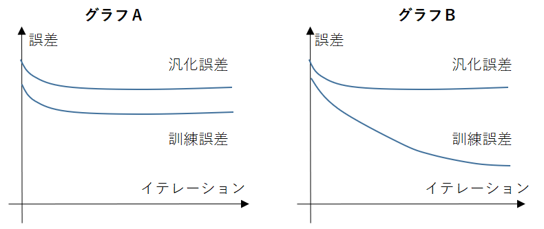

2.以下のグラフについての記述として最も適切な選択肢を1つ選べ。

|
A. グラフＡは過学習を起こしており、グラフＢは過学習を起こしていない。 B. グラフＢは過学習を起こしており、グラフＡは過学習を起こしていない。 C. グラフＡ、Ｂともに過学習は起こしていない D. グラフＡ、Ｂともに過学習を起こしている |
答え Ｂ
【解説】
| 学習を繰り返しても汎化誤差が小さくならないグラフＢが過学習を起こしており、 グラフＡは訓練誤差すら小さくなっていないので過学習を起こしてはいません。（Ｂ）。 |
 戻る
戻る 一覧へ
一覧へ